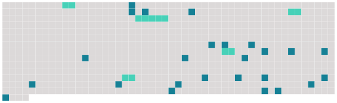

Longueur nb maillons : 30 mentions |
 |
Quand le verre de l'homme était vide, [la femme] , prenant la cruche au cidre, le [remplissait] [1 phrases]
Au bout de quelques minutes de silence, mon cousin demanda : « Eh bien, [Anthime] , [votre] grand-père est mort? --Oui, [mon] pauv 'monsieur, il a passé tantôt. [1 phrases] [La femme] , par politesse, moucha la chandelle. [1 phrases]
» [11 phrases] Comme les petits-enfants du mort ne remuaient toujours pas, et demeuraient face à face, les yeux baissés, avec cette tête de bois des gens mécontents, qui semble dire : « Allez -vous -en, » mon cousin parla avec autorité : « Allons, [Anthime] , [levez] -vous, et [conduisez] -nous dans sa chambre. [2 phrases]
»
» [3 phrases]
» [J'] couchions avec lui auparavant puisque [j'] étions qu'trois. D'puis qu'il est si malade, [j'] couchons par terre ; c'est dur, [mon] brave monsieur, dans ces temps ici. Eh ben, quand il a été trépassé, tantôt, [j'] nous sommes dit comme ça : Puisqu'il n'souffre pu, c't'homme, à quoi qu'ça sert de l'laisser dans l'lit?? [J'] pouvons ben l'mettre jusqu'à d'main dans la huche, et [je] ... [J'] pouvions pourtant pas coucher avec ce mort, [mes] bons messieurs!! |
 |
La ressource peut être téléchargée sur la page Ortolang
Si vous avez des questions ou vous voyez des erreurs, merci d'envoyer un mail à silvia.federzoni89@gmail.com
Site développé par S. Federzoni (contact)